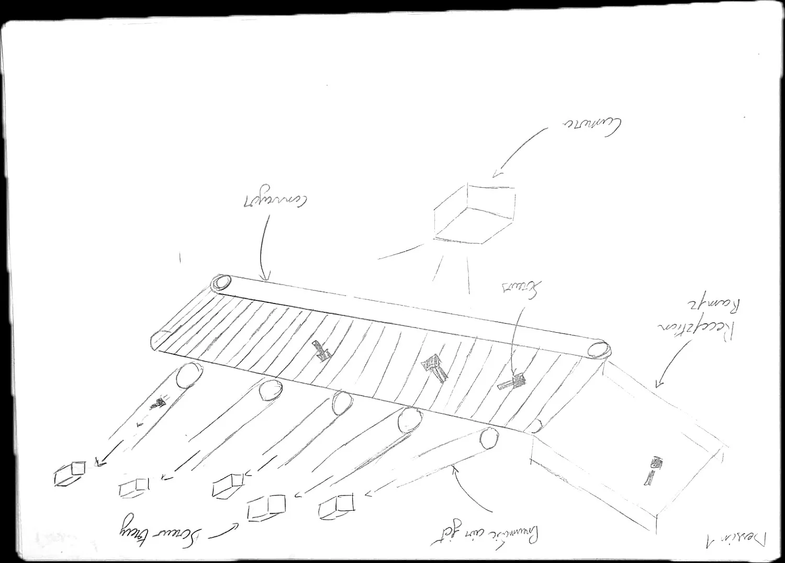
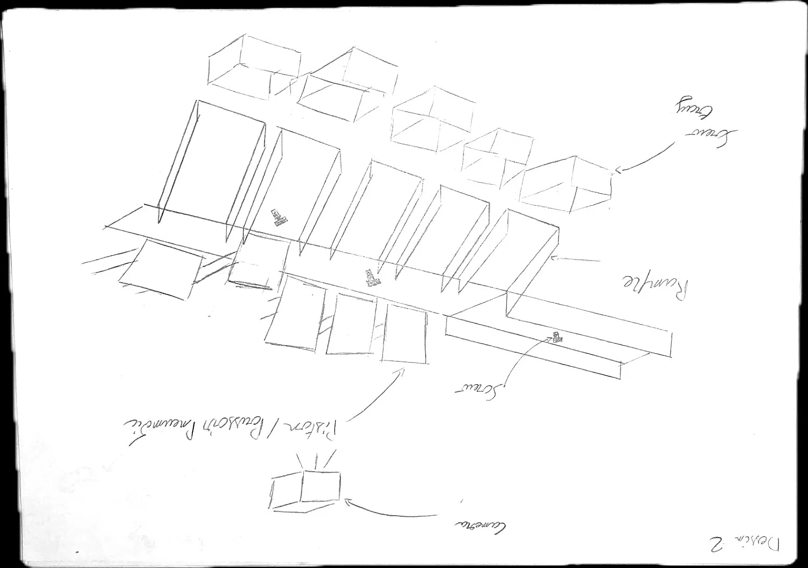
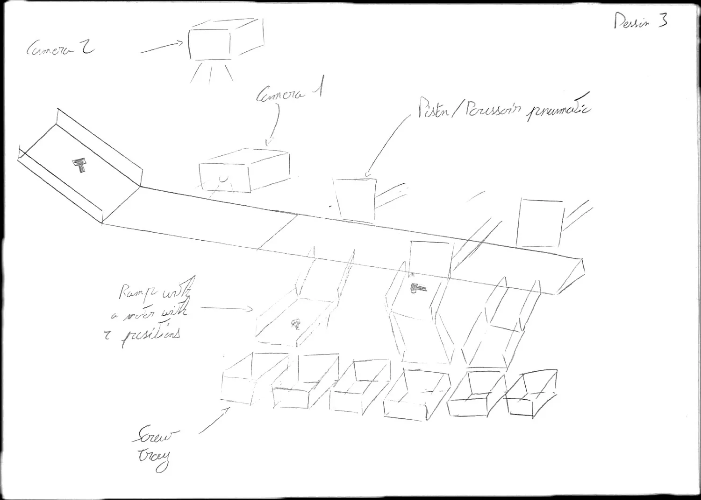
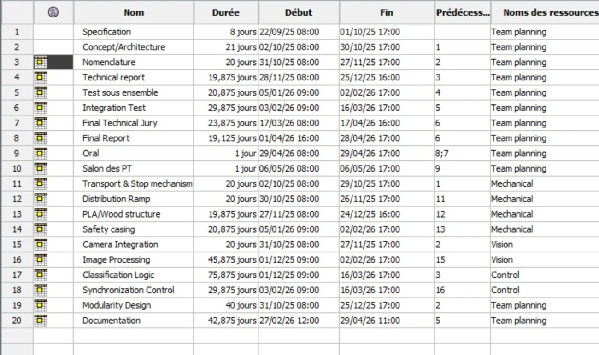
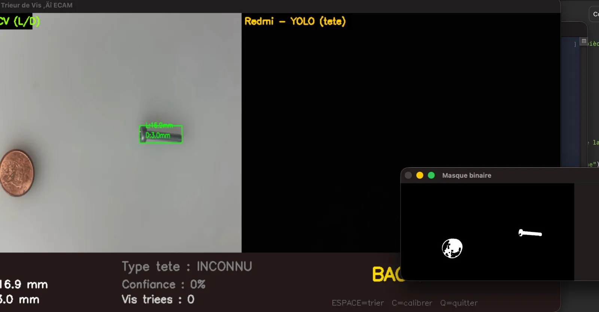
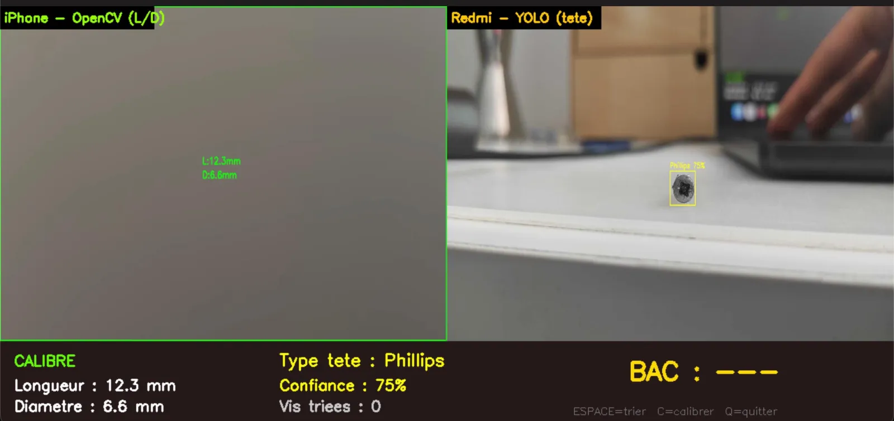
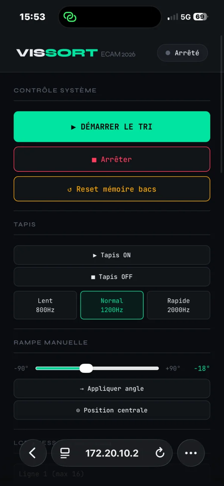
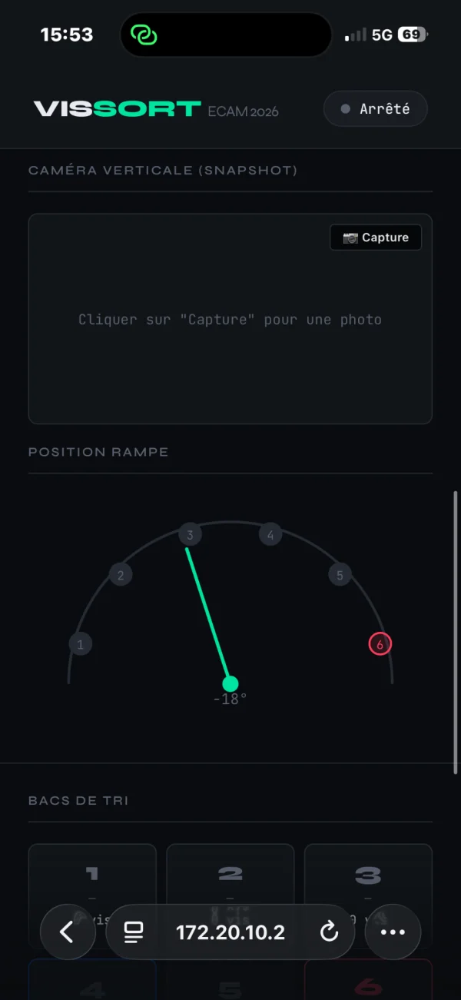
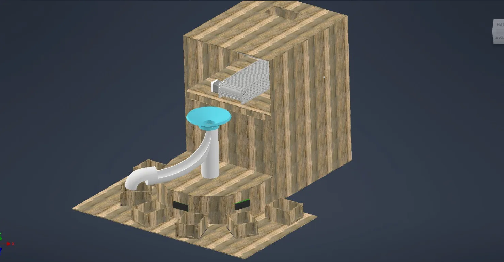

Vision-based screw-sorting machine
A machine designed to recognise and sort screws on its own: two cameras, a YOLO11 model trained on our own dataset and OpenCV measurement, all run by a Raspberry Pi 5 and driven from a web interface. I was the project lead: I defined the architecture, trained the vision model and built the control application. The software side works from the camera to the choice of the bin. The mechanics, on the other hand, did not allow a reliable automatic cycle, and the project was taken over by the next year's students.

The problem
The school's FabLab provides a lot of fasteners, and the bins always end up mixed together. Sorting the screws by hand is repetitive and takes time. The goal of the project was to automate the recognition and separation of different screw types, with a budget under 200 euros.
The first step was to frame the need with a functional analysis, then three concepts were sketched in pencil before choosing one.



What I did
Leading the project
The project lasted 8 months, in 7 phases following a V-cycle, with two-week sprints. As project lead, I split the work into 20 work packages, kept the schedule and coordinated the three streams: mechanics, vision and control. The CAD and the chassis were done by one teammate, the wiring and the drivers by another.

The vision: OpenCV to measure, YOLO to recognise
Two cameras share the work. The vertical camera sees the screw from above: OpenCV measures its length and diameter, with a 1 cent coin (16.25 mm in diameter) as the reference to convert pixels into millimetres. The horizontal camera sees the head from the front, and a YOLO11n model gives the head type on this image.
I trained this model on a dataset annotated by hand in Roboflow, with 1,962 training images. The confusion matrix helps a lot: it shows where the model hesitates, and so where to re-annotate or add images.


From vision to action
When a screw is identified, the Raspberry Pi sends the signals to the driver of the stepper motor, and the ramp turns to the matching bin among six positions calibrated on a 180 degree arc. The sorting is dynamic: a screw whose length and diameter match a category already seen goes to the bin of this category, otherwise it opens a new bin. Five bins are used for sorting and the sixth one takes the rejects.

Note on the code: the architecture is mine and I trained the model. A large part of the Python code was written with an AI assistant (Claude Code).
The problems I hit
OpenCV alone was not enough for the head
The first approach used OpenCV only: Gaussian blur, thresholding, then counting the corners of the recess to find the head type. Reflections on the metal, partial occlusions and heads that look alike made the classification unreliable.
This is why I trained a YOLO model and kept OpenCV for what it does well, which is the measurement. The two together give better results than either one alone.
Tuning the machine without a screen
During the integration, each motor had to be tested, the bin positions calibrated and the vision debugged on a Raspberry Pi without a screen. Editing the Python code, restarting the scripts and reading the results in an SSH terminal was slow, and each adjustment needed several round trips.
So I built VISSORT, a Flask web application reachable from a phone: real-time system status, last screw detected with the YOLO confidence, manual motor controls, camera snapshot, LCD messages and event log. The bin positions could be adjusted live, without touching the code.


Results
- 0.979
- mAP50 of the YOLO11n model on the validation set
- ~90%
- head types recognised on real M3 and M6 screws (target: over 90%)
- ~100%
- correct length and diameter measurements
- ~350 ms
- processing per screw (OpenCV then YOLO)
What worked, and what did not
At the end of the project, the whole software side was working: the detection, the measurement, the sorting logic and the distribution of the screws into the bins. A screw shown to the cameras is measured, recognised and assigned to a bin, and the ramp gets the right position.
On the other hand, the machine did not do a complete sorting cycle in a reliable way, and the cycle time was not measured. There are two main reasons. The first one is the mechanics: the teammate in charge of the CAD left the project halfway through, so everything had to be redone by the three of us, with a budget under 200 euros and limited access to 3D printing. The design we ended up with did not allow the belt and the ramp to work properly. The second one is the light: once the cameras were installed inside the machine, the lighting was not sufficient, and the recognition was less certain than in the tests outside the machine. In addition, even in its nano version, YOLO11 was still heavy for the Raspberry Pi: 200 to 300 ms per image.

The project was taken over by the next year's students.
What I learned
- Combining classical vision and AI: OpenCV for the geometry, YOLO for the classification. Each tool on what it does well.
- Integration takes more time than each sub-system. Modules that work separately do not make a machine yet: fixings, alignment, cable routing and vibrations have to be in the schedule.
- A tuning tool is worth the time spent building it. The web application made the tests and the calibration a lot faster.
- Test the vision inside the real machine as early as possible. A model that works on a table can lose a lot of confidence once the cameras are enclosed with poor lighting.
- When a blocker comes up (late power supply), validating in parallel everything that can be validated avoids a complete standstill of the project.
The tech, in plain words
- YOLO11
- The AI model that locates each screw in the image and gives its head type, fast enough for real time.
- mAP50
- The quality score of a detection model, between 0 and 1. The closer to 1, the more accurate the boxes and types found.
- OpenCV
- An image-processing library, used here to measure the length and diameter of each screw.
- Raspberry Pi 5
- A credit-card-sized computer that runs the vision and drives the motors.
- Stepper motor
- A motor that moves in precise steps, so the ramp stops exactly in front of the right bin.
- Flask
- A small Python framework that serves the web page used to control the machine.